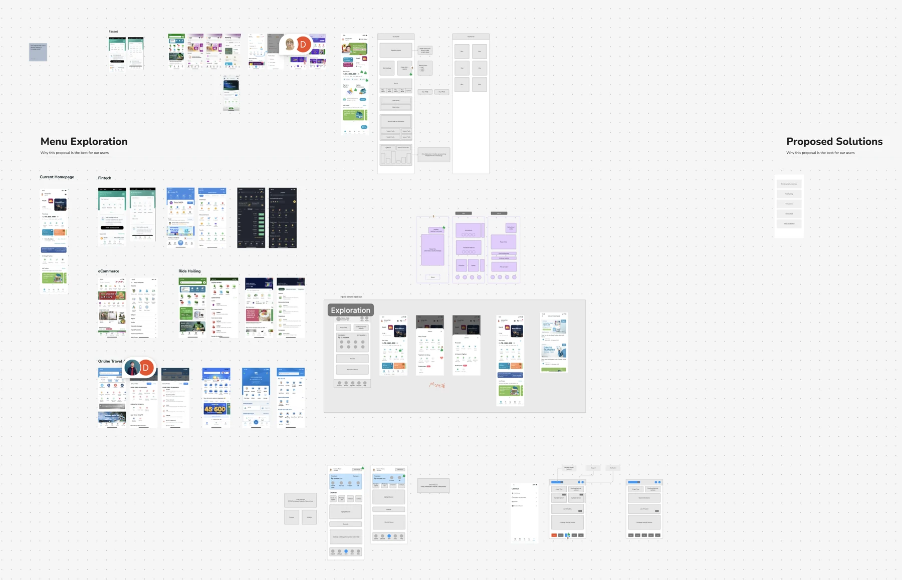
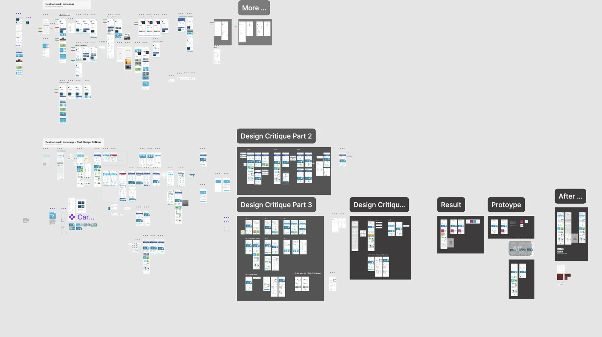
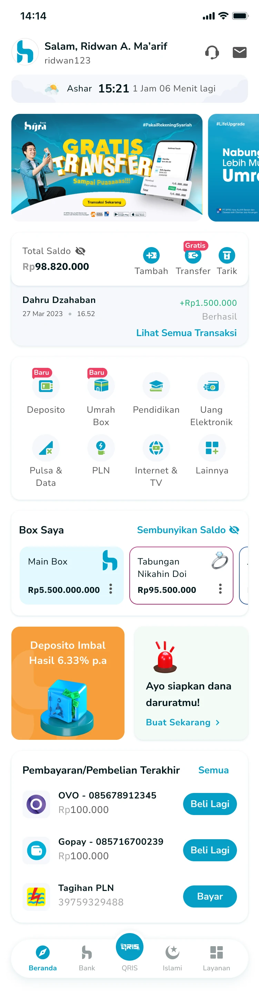

A clearer homepage for everyday banking
Hijra's home screen had grown crowded as teams added features and promotions. I rebuilt its hierarchy around the actions and benefits customers use most.
My part: I reshaped the information hierarchy, designed the new homepage and facilitated four rounds of critique with people from several divisions to agree on it.
- Role
- Product and interaction designer
- Year
- 2023
- Team
- PM, marketing, engineering, business
- Outcome
- +12% monthly transactional users

The problem: every team wanted a spot
Over time, teams had each added a widget. Important promotions sat low on the page, oversized components took valuable space, and customers did not always understand the benefits they already had.
What customers told us
We interviewed employees and entrepreneurs aged 25 to 35 with medium to high digital confidence and balances of up to IDR 5 million. Three themes came up again and again: unclear benefits, weak prompts to act, and features people could not find.

Agreeing on one order
Cross-team ideation and four rounds of design critique, which I facilitated with people from several divisions, turned competing requests into one order: core banking actions first, then featured services, campaigns, prayer times and spiritual wellbeing.

Making the case for the balance section
My lead and several teammates disagreed with my design for the balance section. Instead of defending it on taste, I walked them through concrete reasoning and a side-by-side comparison of the expected impact of each option. The team agreed to go with my direction.
The design: benefits people can see
Essential actions stay central and relevant campaigns move up. Small motion cues, such as the free-transfer label, show value without adding clutter.

Outcome
Monthly transactional users grew 12% and engagement time 8%. Follow-up feedback also showed better awareness of the benefits customers already had.
What I learned
Information hierarchy is agreed before it is laid out. When the people behind competing requests help shape the order, the result lasts beyond the next roadmap.
Results as reported in the original project study.